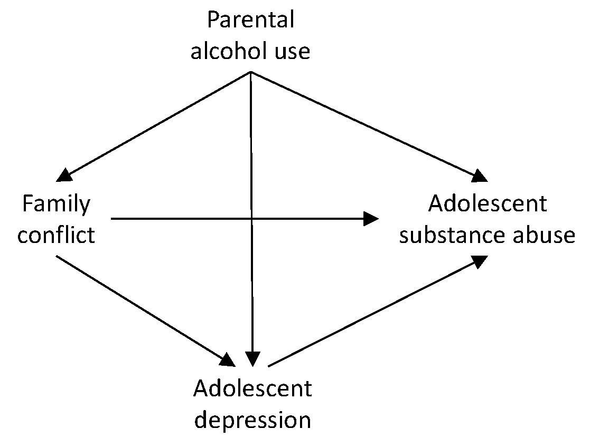
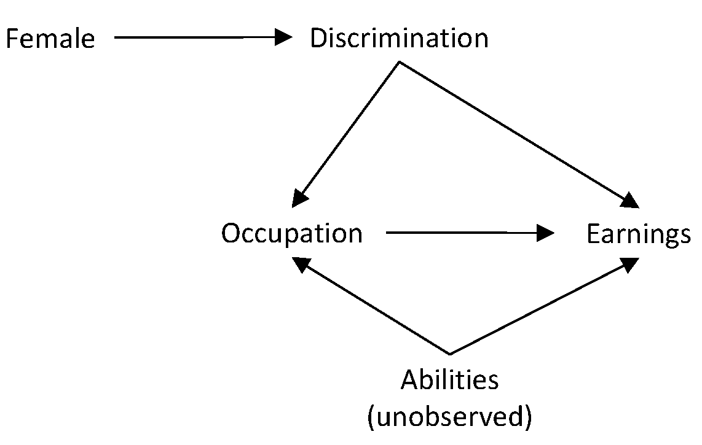
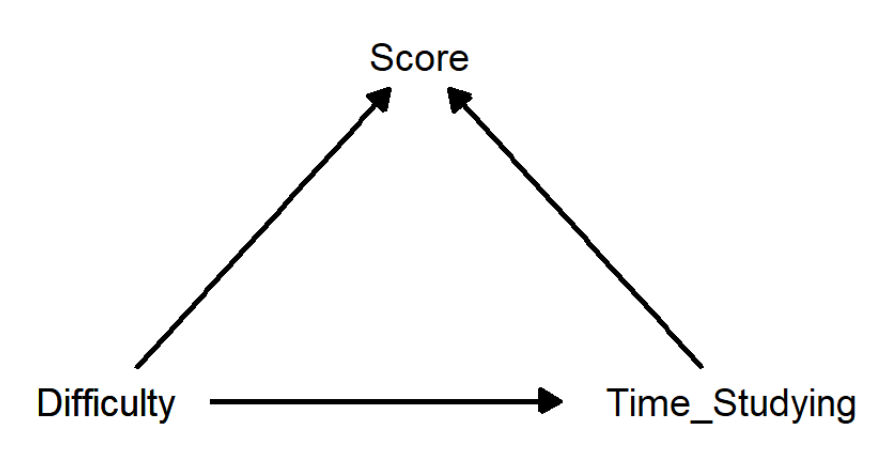

In these exercises, we practice with d-separation by reasoning about them, and through the use of simulations. When using simulations, we use a software program (in this case R) to generate data ourselves, such that we know exactly what the correct relationships are between the \(X\) variable and the \(Y\) that we created. We can then use fit different models with different adjustment sets to the simulated data, and check if we get the correct answer out.
After these exercises, you should be able to:
Write down all the paths that connect a cause and an effect,
classify these into causal paths, back-door paths, and remaining paths, and
indicate how to close open back-door paths without blocking causal paths, or opening closed non-causal paths.
Reasoning About DAGs
Substance Abuse
Suppose we are interested in substance abuse among adolescents. After talking to several experts, we have come up with the below DAG.

DAG of adolescent substance abuse.
Write down all the paths that connect parental alcohol use (\(PAU\)) to adolescent substance abuse (\(ASA\)).
The following paths connect \(PAU\) and \(ASA\):
\(PAU \rightarrow ASA\) (direct causal effect)
\(PAU \rightarrow FC \rightarrow ASA\) (indirect causal effect)
\(PAU \rightarrow FC \rightarrow AD \rightarrow ASA\) (indirect causal effect)
\(PAU \rightarrow AD \rightarrow ASA\) (indirect causal effect)
\(PAU \rightarrow AD \leftarrow FC \rightarrow ASA\) (noncausal path, blocked by \(AD\))
Would it help or harm to control for family conflict (\(FC\))?
This would be harmful, as it would block the causal paths \(PAU \rightarrow FC \rightarrow ASA\) (indirect causal effect) and \(PAU \rightarrow FC \rightarrow AD \rightarrow ASA\) (indirect causal effect). We would thus create over-control bias due to conditioning on a mediator.
Would it help or harm to control for adolescent depression (\(AD\))?
This would be harmful, as it would block the following causal paths:
\(PAU \rightarrow AD \rightarrow ASA\) (indirect causal effect)
\(PAU \rightarrow FC \rightarrow AD \rightarrow ASA\) (indirect causal effect)
Furthermore, it would open this currently blocked non-causal path:
\(PAU \rightarrow AD \leftarrow FC \rightarrow ASA\) (noncausal path, blocked by \(AD\))
We would thus introduce two forms of bias: Over-control bias due to conditioning on a mediator, and collider bias due to conditioning on a collider.
Suppose that we are interested in the causal effect of adolescent depression (\(AD\)) on adolescent substance abuse (\(ASA\)). Based on the DAG above, should we or should we not control for parental alcohol use (\(PAU\)) and/or family conflict (\(FC\))?
First we need to write down the paths that connect \(AD\) to \(ASA\):
\(AD \rightarrow ASA\) (causal path)
\(AD \leftarrow FC \rightarrow ASA\) (open back-door)
\(AD <- FC <- PAU -> ASA\) (open back-door)
\(AD <- PAU -> FC -> ASA\) (open back-door)
\(AD <- PAU -> ASA\) (open back-door)
To close all four open back-door paths, we should condition on both \(PAU\) and \(FC\). Neither of these is a collider on any of the paths, so there is no harm when conditioning on them.
Discrimination
Let’s consider a real-world example from the online book The Mixtape by Scott Cunningham. It is based on the question whether there is gender discrimination in labor markets. Specifically, it focuses on the criticism that Google would underpay female employees, by showing a gender pay gap. Google responded by saying that the difference between males and females in pay disappear once differences in occupation are accounted for.
Cunningham raises the following question:
“But what if one of the ways gender discrimination creates gender disparities in earnings is through occupational sorting? If discrimination happens via the occupational match, than naïve contrasts of wages by gender controlling for occupational characteristics will likely understate the presence of discrimination in the marketplace.”
Cunningham also presents a DAG for this problem, which is displayed below.

A DAG of gender discrimination regarding earnings.
What is the causal effect of discrimination (\(D\)) on earning (\(E\))?
There are two causal paths:
\(D \rightarrow E\) (direct causal path)
\(D \rightarrow O \rightarrow E\) (indirect causal path)
What happens when we condition on occupation (\(O\)), like Google did in their reply? Does it provide a less or a more biased estimate of the effect of discrimination on earnings?
Conditioning on \(O\) blocks the indirect causal path \(D \rightarrow O \rightarrow E\). Hence, it helps to get us the direct effect of discrimination, which does not operate through occupation. This is perhaps in line with what some may consider the right comparison: Correcting for occupation is a way to see whether men and women with the same job receive the same salary or not. However, according to this DAG, there may also be an indirect effect of discrimination (i.e., women are hired into other kinds of jobs than men; this could be a case of discrimination in the company, or perhaps this selection process already occurs during one’s education). By focusing only on the direct effect of discrimination on salary, we can see whether the company should raise the salary of women to create (more, but not necessarily total) fairness across the sexes.
But there is another problem that arises here. Conditioning on occupation actually opens the path \(D \rightarrow O \leftarrow A \rightarrow E\) which will introduces collider bias. While abilities and being female (and discrimination) are independent of each other, by conditioning on occupation, they become dependent, and it thus leads to a non-causal association between discrimination and earnings.
Hence, conditioning on occupation is not giving us the right answer, even if we are sure we are only interested in the direct effect of discrimination on earnings (and not on indirect effects operating through occupation).
The only solution then is to make sure we also get a measure of ability, such that we can close this opened backdoor path and thereby avoid the collider bias that arises when conditioning on occupation.
Conclusion
The reasoning exercises above have illustrated the use of DAGs and the back-door criterion for deciding which covariates to condition on, to identify a particular causal effect. A few highlights of this are:
There may be multiple sets of covariates (known as adjustment sets) that one can condition on to block open backdoor paths. We can use this kind of information when designing a study, to decide what variables to measure. It may be the case that one set is smaller than another, but that it contains a variable that is hard or impossible to measure; in that case we may choose to focus on a different, larger set, because that is more practical in the end.
Perhaps needless to say: The set of covariates one should condition on depends on which causal effect you are looking at. So you have to be clear what you are focusing on in you DAG.
As the possible gender discrimination example illustrates, DAGs can be very useful in organizing an communicating one’s ideas about reality.
Simulations
The goal of this exercise is to get a feeling for how d-separation works. Specifically, we will see what happens if you do or do not condition on a confounder, a mediator, or a collider. Subsequently, we will also investigate what happens if you condition on the child of a confounder, mediator or collider.
In each exercises you will simulate data according to a specific DAG; so you know what the truth is, and you can see which analysis leads to an answer that reflects the underlying truth, and which analysis leads to a biased result.
Exam Scores
This exercises is based on an example from Ben Prytherch. It concerns the score a student receives for their exam and which factors determine this. Prytherch presents the following DAG, which shows that the score depends on both the difficulty of the exam, and the time a student studied for the exam. Moreover, the time a student studied also depends on the difficulty of the exam.

A DAG of the effect of time studying on exam scores.
Use the R-code below to simulate data.
set.seed(285)N <-1000# Sample sizeD <-rnorm(N) # Randomly generate the difficulty variable from a normal distributionTS <-44+0.7*D +rnorm(N,0,1) # Create the `time_studying` variable S <-100-0.8*D +0.4*TS +rnorm(N,0,1) # Create the `score` variabledat <-data.frame(D = D, TS = TS, S = S)
Is there anything you notice in particular when inspecting the correlations?
Inspecting the correlations between the variables using round(cor(dat), 2) shows that the correlation between Time_Studying and Score is very close to zero. In a super naive interpretation one would conclude that it does not make a difference whether one studies a lot or not. However, this is of course not the full story.
Suppose we are interested in the effect of Time_Studying on Score. Should we control for Difficulty? Why (not)?
Yes we should, because Difficulty is a confounder here.
Run a regression analysis for estimating the effect of Time_Studying on Score, and think yourself about whether you should additionally control for Difficult.
fit <-lm(S ~ D + TS, data = dat) # Run regression analysissummary(fit) # Inspect the results
When accounting for the confounder Difficulty, the effect of Time_Studying on Score is \(0.403\), which is close to the value \(0.4\) with which these data were generated.
Assuming you just ran a model that included both Time_Studying and Difficulty as predictors of Score, now run a model that only includes Time_Studying. How do you interpret the results of this analysis?
fit <-lm(S ~ TS) # Run regression analysissummary(fit) # Inspect the results
The current parameter is a biased estimate of the causal effect of Time_Studying on Score; the bias is due to the confounder Difficulty, which has a positive effect on Time_Studying, but a negative effect on Score. As a result, this bias is negative, and it obscures the positive causal effect of Time_Studying on Score (which we were able to correctly recover in the previous analysis).
Suppose we are interested in the effect of Difficulty on Score. What happens if we condition on Time_Studying?
Time studying is a mediator here. If we condition on it, this blocks the indirect path from Difficultyto Score, such that we only get the direct effect of Difficulty on Score. If we do not condition on Time_Studying, we get the total effect of Difficulty on Score, so the sum of the direct and the indirect (mediated) effects.
Assuming you just ran a model that included both Time_Studying and Difficulty as predictors of Score, now run a model that only includes Time_Studying. How do you interpret the results of this?
In the first model, we get the total effect of Difficulty on Score. It is estimated to be \(-0.520\), meaning that more higher difficulty leads to lower scores. Note however that this estimate is closer to zero than the actual direct effect with which we simulated the data, which was \(-0.8\).
When considering the results from the second model, we see that when we condition on Time_Studying, the estimate of the direct causal effect of Difficultyon Score is \(-0.811\), which is quite close to the underlying Truth.
In this case, we thus see that Difficultyhas a negative effect on Score, but this is to some extent countered by the fact that Difficulty leads to more Time_Studying, which in turn increases Score.
Suppose that we are interested in the effect of Difficulty on Time_Studying. What happens if we condition on Score?
Score is a child of both Difficulty and Time_Studying. Hence, conditioning on this will result in collider bias.
To illustrate the problem that can arise when conditioning on a collider, create a new dataset using the R code below. This time, Difficulty has no effect on Time_Studying (i.e., the effect is zero) in the data generating model.
Now run a model to estimate the effect of Difficulty on Time_Studying, once without conditioning on Score, and once while conditioning on Score. How do you interpret the results?
This result shows that when we just look at the effect of Difficulty on Time_Studying, we find a zero effect (the estimate is \(0.022\)). However, if we condition on Score, then the effect of Difficulty on Time_Studying becomes positive; it is then estimated to be \(0.281\).
The latter result can be understood as follows: Within a group of students who score similar on the exam, if the difficulty was higher for a specific student, this student also tended to study longer, while if the difficulty of the exam was lower for a specific student, this student would study less than the average student in this group.
Conclusion
DAGs are extremely useful for determining which variables we should condition on if we want to determine the causal effect of one variable on another. Yet, what combination of covariates forms a valid adjustment set depends critically on the exact DAG we have; as soon as we add an arrow, or drop an arrow, this can change.
In general, when considering a DAG, you should be able to read of the causal paths, and the back-door paths; you should be able to determine whether the back-door paths are open or closed; and you should be able to figure out what variables to condition on so to close the open paths, without opening blocked paths (or you should take further actions to close these newly opened paths).